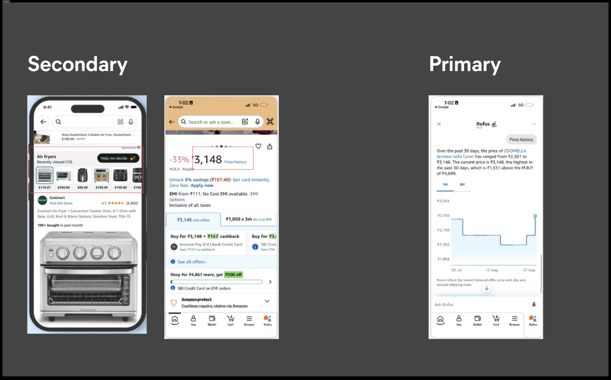
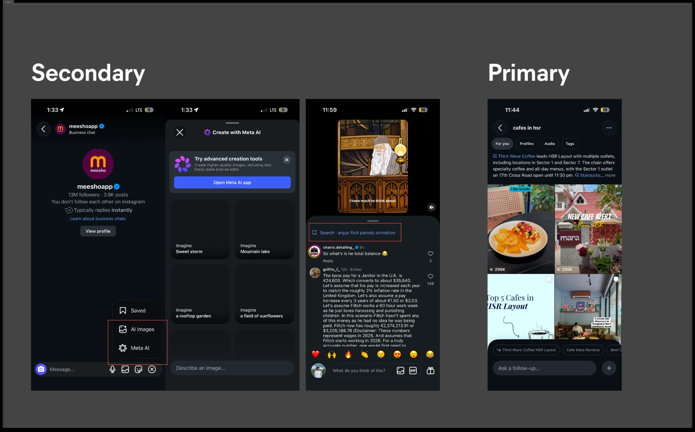
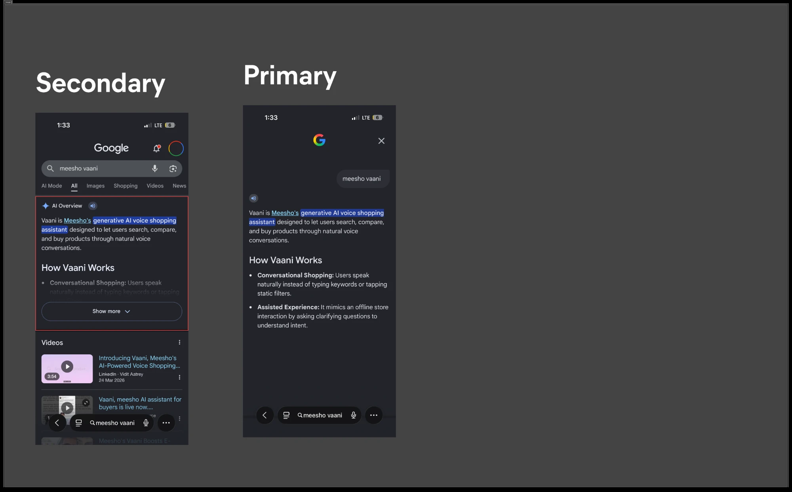
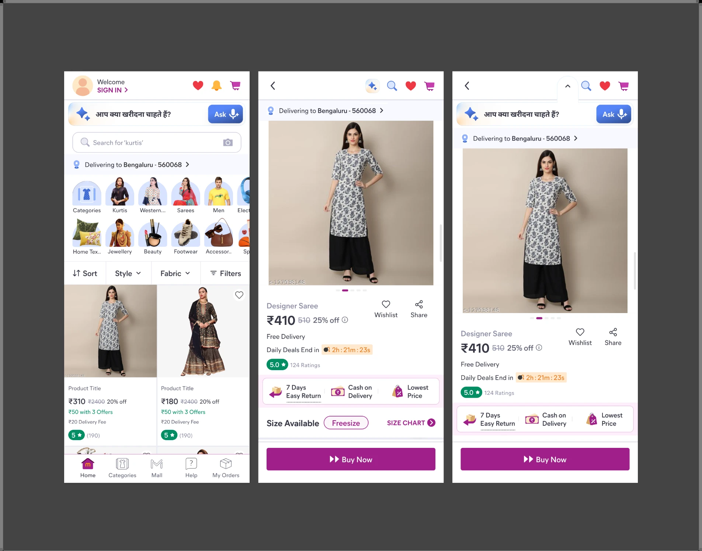
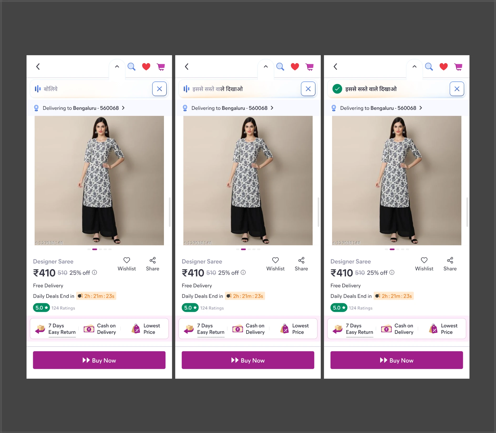
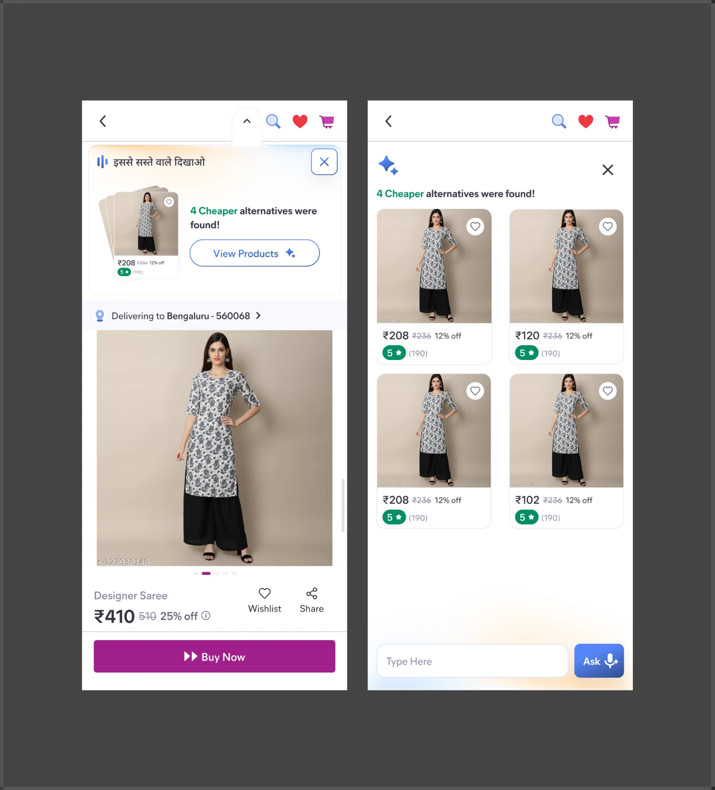

Vaani · The Future of the Product · August 2026
Where Vaani is capped today, and what lifts the cap
Two months of usage data on what Vaani does well, the two limits it has run into, and the product model that clears them.
▶Part 0Summary viewThe whole argument in one page. Everything after this is evidence for it.
Six statements carry this document.
Vaani was built voice-first, with thin UX
A deliberate first bet: add intelligence to the app without redesigning it.
Most users never adopt it
87.4% of people who could use Vaani never speak to it once.
The current adoption mechanism asks for trust before showing value
A nudge names a category of question. It never demonstrates the intelligence.
Habit forms when users receive enough useful outcomes
Past five sessions, 89.6% self-initiate. Trust is earned by outcomes.
Habit-forming users still shop with more effort, not less
Clicks per order go up. Repeat usage is not the same as a solved problem.
These are two problems and they need two fixes
Part 1 proves each one. Part 2 sets out the approach. Part 3 is the first experiment.
Where the two ceilings come from
| Term | Definition |
|---|---|
| FIND | The user wants to see something that is not on screen. 58.6% of turns. |
| DECIDE | The user wants help with the product already in hand. 29.9% of turns. |
| Good FIND outcome | The user clicks a product Vaani searched for them. |
| Good DECIDE outcome | The user adds to cart, in the same category, after asking Vaani about it. |
| Anchor | The first product a buyer clicks of the type they end up buying. |
▶Part 1Problem deep-diveTwo ceilings, taken one at a time. Adoption first, then response quality.
▶Section 1Adoption of Vaani87.4% of users who could speak to Vaani never do. Of those who do, 64.5% never come back.
From exposed, to adopted, to habit
Everyone who could have used Vaani, and where they land.
Of everyone exposed, 87.4% never speak to Vaani once. Of the 97,646 who do, 64.5% never return. Only 6.5% of adopters, 6,361 people, reach five sessions.
The loss sits in one place. 34.7% of adopters reach a second session and 17.3% a third; after that the curve flattens. This is a first-experience problem, not a retention problem.
▶Sub-section 1What does Vaani do for users today, and how does it drive adoption?
The first version was deliberately narrow: voice-first, minimal UX change, intelligence used to make existing journeys easier. That let us learn how users behave with conversational help before rebuilding shopping around it.
Because Vaani sits inside the app as one feature, every outcome it can serve has to land on a screen that already exists. Three capabilities came out of that constraint.
Initiate search
Start looking for a product in the user's own words rather than the app's taxonomy.
Refine the feed
Narrow what is being shown without the user finding and combining filters.
Understand a product
Answer questions about a product already on screen: price, quality, size, delivery.
Adoption is driven by a separate machine built alongside them: a floating mic button, page-intro nudges on the product page, listing page and cart, and zero-click nudges that fire when a session is about to end with nothing clicked.
Voice removes real friction. Spelling, taxonomy, and the effort of turning a need into search terms all get easier. One user put it plainly:
"Spelling nahi aati hai toh … bol karke phir aa jaati hai."
All three capabilities operate a surface the app already had. Vaani operates those surfaces better. It rarely creates a new experience around the user's mission.
So what
The app remains the experience. Vaani helps operate it. Both ceilings in this document follow from that.
One outcome we did not plan for. A new modality surfaced demand that could not have appeared before: people started negotiating on price, at volume, because speaking made it possible where tapping did not. Nobody designed that. It is now the single largest thing anyone says to Vaani, and it is evidence that a new way to engage produces new demand.
▶Sub-section 2Why does even the sharpest voice nudge fail to move adoption?
Zero-click nudges fire when a session looks highly likely to end without a single product click. That is a moment of measurable need and about as conservative as a trigger gets. If nudging were going to teach the capability anywhere, it would work here.
First, a measurement correction. The original "adopted" flag meant a mic tap within 60 seconds. Only 35.6% of those had a real conversation behind them, so roughly 61% of what we called adoption was a tap that went nowhere. Every figure below uses a tap and a real Vaani turn.
strict adoption among users shown the nudge
of mic taps never become a real conversation
of adopted turns click Vaani's own result
of nudge-driven adopters return on their own
Every rule lands in the same narrow band
Strict adoption by nudge rule, both arms.
The whole portfolio sits between 7.5% and 13.6%. The best performer is the search-results repeat nudge, not a zero-click rule. Targeting is not the constraint.
The same nudge wears out each time it fires
Adoption rate by how many times a user has already seen that rule.
Zero-click nudges fall from 8.0% to 3.2% by the seventh exposure. Repetition burns a nudge rather than recovering it.
Nudges do work when they land. A nudge that produces a real conversation changes the session immediately.
When it lands, it works
Share of sessions ending with no product click at all. Lower is better.
A real conversation cuts the zero-click rate from 32.6% to 12.8%, a 2.6× reduction. Nudges also drive 62.9–65.4% of all first-ever adoption.
So what
Voice nudges alone cannot drive adoption or repeat usage. The mechanism works when it lands, it lands for one user in eight, it lands less each time it fires, and the users we do reach we cannot reach twice.
▶Sub-section 3Why does the current adoption technique not work?
Four reasons. None of them is a bug. Each follows from building a pull product and then pushing people into it.
1 · We name the question instead of answering one
Users do not know what to ask, and our response is to tell them what they are allowed to ask. "Do you want to know?" hands over a category of question and assumes their sense of what Vaani can do will widen on its own. The intelligence is never shown. A first-time buyer with no mental model of a shopping assistant has to imagine the value before seeing any of it.
2 · You miss it, you miss it
The nudge is spoken once and then gone. Nothing persists on the app, nothing to scroll back to, no record that builds belief. Capability discovery depends on one exact moment, and the decay curve above is what that costs.
3 · Voice is a weak medium for push
Phones stay muted and some handsets have a lower baseline. Dense, shared households make audio easy to lose and awkward to use. TTS quality undermines trust in the thing being offered. Voice works well once intent exists. It works poorly at creating it.
4 · A floating button is the only door in
The user's entire window into Vaani is a mic hovering over the app. It reads as optional, and at best as a better search box. Vaani is not woven into any surface's own objective, so users experience a separate feature attached to the app.
So what
Delivery cannot be voice alone. It has to be more than that. This needs rethinking hardest for users who cannot read, because voice-only was our original answer for exactly that group. If a spoken nudge is the only channel, those users get the weakest version of the product.
▶Section 2Response qualityVaani answers "find me something" well. It answers "help me decide" with words, and words do not close a decision.
Solving adoption alone would not be enough. If an answer is not already a feed, a product module, a search result or an app action, Vaani has nowhere to put it.
▶Sub-section 1Where does Vaani produce a useful response today?
Start with what users ask for.
What people ask Vaani for
2,201,813 classified turns across 519,160 sessions and 167,082 users.
Six in ten turns are "show me something". Three in ten are about the product already in hand. The remainder is mostly unintelligible audio, and it shrinks with experience, from 13.7% of turns in a first session to 9.7% by the tenth.
The shape of a FIND ask
1,289,995 FIND turns by what the user supplied.
81.3% of FIND includes a category. "Attributes only" usually leans on what is already on screen. "No category" is often a stated problem or a dissatisfaction rather than blank intent.
Inside DECIDE, and the one ask that is missing
657,387 DECIDE turns by what the user wanted to know.
Price is 64.1% of the branch, about 19% of everything anyone says to Vaani, and 44.6% of price turns are negotiation. In the last row: asking Vaani to compare two products happens 556 times in 2.2 million.
556 comparison asks is not low usage of a feature. It is a capability that effectively does not exist, at the moment a shopper decides.
Response quality splits cleanly by what Vaani does
Good outcomes happen when Vaani does the task
Successful-outcome rate by what Vaani did in response.
Performing the task directly is worth 74.4%. A specific spoken answer is worth 28.4%, a generic one 15.5%. Asking a question back, when the user has just asked us to do something, is worth 12.6% across 288,350 turns.
The ordering is the diagnosis: do the task > answer specifically > answer generically > ask the user to try again. FIND is a task Vaani can perform, so FIND works. DECIDE is a question Vaani can only talk about, so DECIDE does not. Price, the largest ask by volume, lands at 29.6%.
The deciding journey is where the orders are
Before a shopper buys, they go back and look at something again. That behaviour produces most of our revenue.
Comparison behaviour is what buying looks like
Session conversion, split by whether the shopper re-opened any product.
Sessions with a revisit convert at 15.4% against 3.1%. They are a fifth of sessions and produce 55% of all orders.
The hunt after the anchor is long and manual
Once a buyer clicks the first product of the type they eventually buy.
Buyers make 7.1 more same-type clicks after anchoring. 75% of onward clicks stay in the category tree. Anchoring at twice the price finally paid costs +56% more browsing.
So the behaviour that produces most orders is also the most effortful thing a shopper does, and it is unassisted. When Vaani intervenes at that moment, the only tool it has is a fresh search.
Re-searching does not rescue a stalling decision
Same-category conversion after a price negotiation, by what Vaani did next.
Same-product closure falls from 34.0% to 20.8–23.7% once a broad re-search fires. The alternate gain does not offset the anchor loss.
The re-search drops what was just discussed
Share of post-decision re-searches preserving the exact constraint.
Only 4.6–14.8% carry it forward. A shopper says "same but cheaper" and gets a fresh search instead of a branch from the product she liked.
There is no place in the product to hold "keep this, change that". Alternate discovery means preserving what the user likes and changing what they do not. That is state management before it is retrieval, and a feed cannot hold state.
What users are trying to do, in five states
A better unit than "screen" is the shopping mission. Part 2 builds against this frame.
| State | In the user's words | What our data says |
|---|---|---|
| Start | "I haven't seen any products yet" | 57.5% of home search actions. Home is already the launcher. |
| Refine | "I haven't found anything I like yet" | 44% of search-page searches. The mission we serve reasonably well. |
| Alternate | "I found something, is there better?" | 42% of PDP-triggered searches are the same thing with a different attribute. |
| Decide | "I want to be informed before I buy" | 29.9% of all turns, and only 556 explicit comparisons. |
| Resume | "I abandoned this, let me pick it back up" | Under-built. Its best door only exists if the user expressed preferences to Vaani earlier. |
So what
Response quality is good on FIND and poor on DECIDE. The gap is concentrated in alternate discovery and comparison, which is also where 55% of orders come from, and today Vaani makes that moment worse because it does not carry the user's stated constraint forward.
▶Sub-section 2Does a good response earn repeat usage?
Yes, and it is measurable. We took every user's first turn of a given ask, graded that first outcome, and checked whether they came back to ask the same thing again.
A good first answer earns the second ask
Repeat rate for each DECIDE ask, after a bad first outcome against a good one.
On price, our biggest ask, a good first answer moves repeat from 62.8% to 84.0%, and turns per user from 8.2 to 10.7. Delivery shows the largest relative lift at 1.37×.
Users who get through behave the way we would want. Past five sessions the behaviour is self-sustaining.
at five sessions, continue to another
at five sessions, self-initiate rather than wait to be nudged
use Vaani again within their next five app opens
Which means adoption and response quality are one loop
Vaani earns a second use only if the outcome was good. Trust therefore cannot form until the third stage of the loop, and today the first stage carries a menu rather than an outcome.
Nudge → adoption → outcome → repeat, as it actually converts
Each stage as a share of the stage above it, on the nudge arm.
A user who never gets a good outcome never enters the loop, which is why adoption and response quality cannot be worked on separately.
So what
When we produce a good outcome, we win repeat usage of that specific behaviour. Response quality is not only a satisfaction measure. It is the acquisition channel for the next ask.
▶Sub-section 3How much effort do habit users actually spend?
Vaani users order more, and the gap survives tight matching on how often people open the app. The question is what those orders cost to produce.
Heaviest Vaani users vs never-users
Matched on how often they open the app.
Every measure moves the wrong way: more clicks per visit, more per order, more products considered, and slightly more visits to a first order.
Vaani turns spent per incremental order
At four levels of matching rigour. Lower is more efficient.
The most carefully matched read is 126 turns per incremental order, and 185 against control. The order gain is real in every cut and expensive at today's response quality.
Effort rising alongside orders is what happens when an assistant helps a user keep looking instead of helping her decide. Every turn that ends in a spoken answer sends her back to browsing, and browsing is what the effort numbers count.
Experienced users ask Vaani later, not sooner
If Vaani were becoming a way to shop, familiarity would move the turn earlier in the journey. It moves later. A product-page turn typically lands on the second product of that type the user has opened, and with experience it goes deeper, from 4.22 same-type clicks before the turn in session one to 5.50 by session eleven.
So what
Vaani has settled into an end-of-crawl tool, reached for after the manual work is done, by users who have learned the narrow thing it is good at. Habit users spend more effort per order, not less.
▶Part 2Solution approachWhat we hold true, the two surfaces each ceiling needs, and how the two become one product.
▶Section 1Solution philosophyThe constraints we design inside, and the two-surface model that satisfies them.
▶Sub-section 1Principles
Five positions, each settled by our own LODs and shipped experiments. Every proposal that follows is constrained by them.
Voice cannot carry discovery on its own
Part 1 settles this. Voice is excellent once a user knows what they want to say, and poor at teaching them what is possible. Whatever we build has to make capability visible without requiring the user to hear anything — and it has to work hardest for users who cannot read, because voice-only was our original answer for exactly that group.
Browsing is not a problem to be solved
Visual browsing is the core behaviour of Indian e-commerce and the one our users are genuinely comfortable with. It is not friction to be removed. Any model that assumes users would rather converse than scroll is arguing against the evidence.
The app is already good at what it infers. Vaani should be good at what users state.
Where Meesho works from implicit understanding — the feed on open, ranking, recommendations — it works well, and we should not rebuild it. Voice adds real usability for rural users. But Vaani's distinct value only appears when we use intelligence against explicit intent: what the shopper has actually told us they want, kept and acted on.
We cannot design straight to the end state
"Vaani and the app become one" is a destination, not a plan. We do not yet know how users will choose to use a generative shopping interface, and they do not yet know it exists. The interaction model has to be taught gradually and learned recursively — each step earning the next — not shipped in one release.
Principle 5: an unconstrained surface is how we learn what to build next
Give a shopper somewhere to state what she wants, rather than operate controls, and it stops being only a delivery mechanism. It becomes the one place users can show us what they expect a shopping assistant to do. Sub-section 2 gives this surface its name.
An intent-led surface
one screen, two directions of traffic
Meesho → user
User → Meesho
We use it to show users the future of Meesho — while users use it to tell us what that future should be.
It keeps producing problems we could not have written down
Every mission a user attempts on an unconstrained surface is a statement about what she expects Meesho to do, and most of those expectations are not in any roadmap. Comparison was invisible until we counted 556 asks. Price negotiation was never designed; it arrived because we changed how people could express themselves.
▶Sub-section 2Two surfaces, and how other products use them
Adoption fails because intelligence is invisible until the user knows what to ask. Response quality fails because intelligence has nowhere to express itself once she does. Two failures, two surfaces.
What separates the two
Everything on the left lives in Meesho's own constructs and is judged on whether people engage with it. Everything on the right belongs to Vaani and is judged on whether the shopping mission closed.
Fix one · show the path
Secondary surfaces
Intelligence rendered inside the app the user is already using. It solves the adoption ceiling.
Fix two · shorten the path
The primary surface
A surface Vaani owns, where the interface is generated for the mission. It solves the response-quality ceiling.
App-first, Vaani-assisted → Vaani-first, app capabilities underneath.
The two are not phases. A secondary surface with nothing good to hand off to produces another 12% nudge. A primary surface nobody discovers produces another 87.4%. They work as one system.
Four products already ship this split
In each case a small piece of intelligence sits inside a normal screen, and that piece is the reason anyone finds the larger surface behind it. Secondary on the left of each frame, primary on the right.
Amazon · Help Me Decide, and price history

The trigger is a state, not a question. Ten products viewed and nothing bought is something the app already knows and normally hides; Amazon turns it into a button on the recently-viewed strip. "Price history" is two words next to the number they are about. Neither asks the shopper to know an assistant exists. Both open Rufus with the question already asked, and Rufus answers with a chart and a verdict — an interface the product page could never have rendered. Help Me Decide ↗ · Rufus ↗
Instagram · Meta AI

Many small doors, one destination — in that order. Meta put its assistant inside the DM composer, inside creation, and as a search chip on the reel itself, each in that surface's own idiom. The full AI surface came after those doors had taught people what it does, not before. This is principle 4 in production. Meta AI ↗
Google · AI Overviews and AI Mode

The secondary surface is the page the user was already on. AI Overviews answers inside normal results — no destination, no prompt, and it appears whether or not you were looking for an assistant. The follow-up flows into AI Mode with the original query preserved. Google reports users preferred the natural transition. AI Mode and AI Overviews ↗
Grok moved from a nav-bar destination to a button on the post itself. The object carries the context, so the user never rebuilds it. The entry point is the intent, not the brand. source ↗
Grok moved from a nav-bar destination to a button on the post itself. The object carries the context, so the user never rebuilds it. The entry point is the intent, not the brand. source ↗
So what
In every one of these, the assistant is discovered because a small piece of it did something useful on a screen the user was already looking at. That is the mechanism we are missing.
▶Section 2How we can solve adoptionSecondary surfaces: what the principle is, and what it looks like on Meesho.
▶Sub-section 1The principle for a secondary surface
Produce a useful outcome before asking for adoption.
A secondary surface is not another Vaani button. It is Vaani doing a small, useful thing inside the task the user is already doing, and signing it. The model is five steps and none of them start with a prompt.
The user gets value at step one whether or not they ever reach step five.
So what
The user gets value at step one whether or not she ever reaches step five. Adoption becomes a by-product of usefulness rather than a prerequisite for it.
▶Sub-section 2How we can apply it on Meesho
The six beliefs this has to build
Adoption follows belief, and belief is built by repetition of small proofs. None of these can be asserted in copy.
Don't sell the intelligence. Demonstrate it. The secondary surface's first job is not conversation — it is evidence.
Six primitives that build them
Each primitive is a shape of output rather than a feature. Any surface can carry any of them.
| Primitive | What Vaani does | Example |
|---|---|---|
| Verdict | Interprets the current set, product or situation | "20 products here are under ₹500." / "Sizing reviews are mixed." |
| Suggestion | Surfaces a useful next option | "Suggested by Vaani" — a cheaper substitute, an in-stock alternative |
| Preference hypothesis | Makes an inference visible and correctable | "You seem to skip green kurtis — show fewer?" |
| Tip / nugget | One useful insight, consumable without a conversation | "Pay prepaid, save ₹50." / "Buyers say this runs small." |
| Work already done | Completes something before being asked | "While you were away, Vaani organised your wishlist." |
| Functional action | Executes a job where intent already exists | Track, cancel, return, exchange, review |
Some of this intelligence already exists inside Meesho. Packaging it as Vaani is what builds one consistent, attributable identity.
Some of this intelligence already exists inside Meesho. Packaging it as Vaani is what builds one attributable identity.
What it looks like on screen
Feed · verdict nudge
Show the path. The user never had to learn that the feed can be narrowed — Vaani did it and showed the result.
PDP · decision intelligence
Buyers love the fabric — but sizing runs small. Reliable seller, 4.1★ across 8k orders.
Why? ›Our biggest ask, answered properly. A verdict with evidence, instead of a spoken price.
Wishlist · work already done
Doing beats offering. The work is finished before the user is asked for anything.
Native to each surface, consumable in place, one tap from a conversation — and always signed "Vaani."
Native to each surface, consumable in place, one tap from a conversation, and always signed "Vaani."
Feed intelligence should look native to a feed and product-page intelligence native to a product page. What travels between them is the mark, not the UI. Repeated association is what turns scattered smart features into one entity the user can name.
Where secondary surfaces go, screen by screen
The same five steps run everywhere. What changes per screen is which primitive fits and which mission it serves.
| Real estate | What Vaani says | Mission |
|---|---|---|
| Feed / search results | "Vaani found 14 cotton kurtis under ₹500 in these results." / "You have skipped most synthetic fabrics — avoid them?" | Refine |
| PDP | "Buyers like the fabric, but sizing is inconsistent." / "Vaani recommends M for you." | Decide |
| PDP bounce | "Didn't like this one?" Later: "You seem to be rejecting on price. Keep the style and show cheaper?" | Preference learning |
| Wishlist / recently viewed | "Vaani found a cheaper option similar to this." / "These two are close substitutes — compare?" | Alternate |
| Cart | "Vaani found a similar product ₹80 cheaper." / "This item has weaker reviews than another you shortlisted." | Alternate |
| Homepage / Inspire Me | "Vaani picked these because Rakhi is coming up." Curated, not merely ranked. | Start |
| Search entry | "Continue with cotton kurtis under ₹500?" Shorten the path rather than restarting intent. | Start / Refine |
| Orders | "Tell Vaani what you need done" — track, cancel, return, exchange, review. | Functional habit |
| Post-purchase | "Vaani found matching leggings for what you bought." / "This is unavailable now — here is a close replacement." | Resume |
▶Section 3How we can improve response qualityA primary surface, for the journeys the app has no way to serve.
▶Sub-section 1Which journeys will a primary surface help with?
One class of request: the ones where a shopper has to state explicit intent because the app has no way to serve it. Alternate product discovery. Comparison. "Same but cheaper." "Which of these two." These are reasoning tasks that carry state, and there is nowhere in Meesho for them to happen.
Users already know how to browse, and the goal is not to make every interaction conversational. Let them browse until intelligence can materially improve the journey, then take control.
"Browse → find anchor" becomes "anchor → understand intent → Vaani actively completes the mission."
That single separation also disarms the third adoption failure from Part 1 §1. Low volume, shared households and weak TTS all stop being load-bearing the moment the answer is something you can see.
That separation also removes the third adoption failure from Part 1. Low volume, shared households and weak TTS stop being load-bearing the moment the answer is something you can see.
Four jobs it owns
| Mission | What Vaani owns | What the interface may need |
|---|---|---|
| Alternate | Preserve what the user likes and change the failing constraint | Pinned anchor, must-keep / must-change, a small alternative set, reason labels, easy return |
| Compare | Organise real candidates around what matters for this mission | Side-by-side evidence, mission-specific criteria, explicit trade-offs |
| Decide | Synthesize price, reviews, seller, delivery, fit and user context | Verdict, evidence, uncertainty, next actions |
| Resume | Carry the mission forward instead of restarting discovery | Prior anchors, expressed preferences, what changed, new options |
So what
The primary surface is scoped to the missions the app cannot serve today, which is also where response quality is worst and where 55% of orders are decided.
▶Section 4How we get from Vaani today to the end stateFive phases, taught through demonstrated utility rather than shipped in one release.
Secondary and primary run together as a wheel. Each turn makes the next intervention sharper, and over enough turns the two surfaces stop being distinguishable from the app.
↵ and sharper interventions detect better opportunities — the wheel turns again ↵
Step four is not theoretical. Across the 40 heaviest Vaani users and the 29,317 turns between them, voice corrected, contradicted or wholly supplied what the platform believed for 26 of the 40, and 8 of them are invisible in our order systems.
What the conversation knew that our systems did not
The 40 heaviest Vaani users, against what the platform believed about them.
The same 40 conversations surfaced 245 unmet asks, 163 explicit rejections, 144 stated price ceilings and 83 hard exclusions. None of that exists in click data.
Five phases from feature to interface
Vaani's prominence grows only where users show pull.
Evidence
Vaani leaves visible proof of intelligence across feed, PDP, cart, wishlist and orders. No conversation required anywhere.
Interactive
Every intervention can be acted on — "yes, show more", "why?", "no, correct that". Vaani starts the conversation instead of waiting for it.
The handoff carries context
Tapping an intervention opens the primary surface already holding the screen, the product and the behaviour behind it. The user never restates anything.
Expand based on pull
Users who repeatedly engage receive richer outputs, more prominence and lower friction into primary Vaani. Prominence follows demonstrated demand.
Adaptive Meesho
The user states the outcome. Vaani orchestrates the experience — search, ranking, evidence, comparison and action — while Meesho provides the visual control surface.
▶Part 3Immediate next experimentOne mission, both surfaces: alternate product discovery.
▶Sub-section 1The problem we want to apply this to
Alternate product discovery is the cleanest place to test the model. It has the most evidence behind it, the clearest failure today, and it needs both surfaces to work: a secondary card to create the pull, a primary surface to do the reasoning.
| Evidence from Part 1 | Reading |
|---|---|
| Revisit sessions produce 55% of all orders | Alternate discovery sits inside most successful journeys |
| 7.1 more same-type clicks after the anchor | Shoppers do it manually, and it is expensive |
| Same-product closure falls 34.0% → 20.8–23.7% after a re-search | Vaani currently makes the moment worse |
| Only 4.6–14.8% of re-searches keep the stated constraint | The cause is that we drop what the shopper just told us |
| 556 comparison asks in 2.2M turns | The capability users would need does not exist |
So what
One mission carries the whole argument. If a visible card can pull a shopper into a surface that closes alternate discovery better than the app does, the model holds. If it cannot, we have learned that cheaply.
▶Sub-section 2What the experiment could look like
Three stages, all inside the shopper's normal journey. She never opens a Vaani destination and never restates what she wants.
1 · The door — a visible way to state intent, on screens she already uses

Nothing here asks her to adopt anything. An Ask bar sits on home in the app's own idiom, and the same affordance appears on the product page — not a floating mic hovering over the experience, but a control that belongs to the screen it is on. This is the secondary surface doing its only job: making the capability visible before she needs it.
2 · The ask — she supplies the constraint, not the context

"इससे सस्ते वाले दिखाओ" — show me cheaper ones than this. The word इससे is doing the work: the anchor is the product already in front of her, so she never describes it. All she supplies is the one thing that is wrong with it. Compare that with today, where the same intent becomes a fresh search that carries the constraint forward only 4.6–14.8% of the time.
3 · The answer — a card on the page, then a surface built for the set

The primary surface: anchor, constraint, generated set
That flow is the primary-surface thesis in its smallest testable form: an anchor, a preserved constraint, a generated set, and a reason for each item. If it works, "task first, UI second" stops being a principle and becomes a shipped behaviour.
Full scope and measurement: KRD — Alternative Discovery on Price Turns ↗
The secondary surfaces that create the pull
Three interventions, each useful on its own terms whether or not it leads to Vaani. Three, not omnipresence, because the question is whether the mechanism works.
PDP · decision evidence
"Buyers like the fabric, but sizing is inconsistent."
Targets the price ask we currently answer with words — 29.6% success today.
Wishlist / revisit · alternate trigger
"Vaani found a cheaper alternative to this."
Targets the revisit pattern that produces 55% of orders.
Feed · refinement verdict
"Vaani found 14 cotton kurtis under ₹500 in these results."
Targets the silent stretch before a first search.
What we measure
| Measure | Question it answers |
|---|---|
| Interaction rate | Does visible intelligence get engaged with at all? |
| Ignore and dismiss rate | The counterweight to interaction, and our imposition guardrail |
| Perceived usefulness | Did the intervention solve the local job, independent of Vaani? |
| Downstream primary adoption | Does belief convert into usage? |
| Later voluntary use | Was trust actually built? |
| Interruption or annoyance | Our users do not complain when we get this wrong. They avoid. |
▶Part 4AppendixWhere the numbers come from, and a recorded walkthrough.
▶Section 1Sources
Figures are drawn from Vaani analytics between May and August 2026. The main turn analysis covers 2,201,813 classified turns across 167,082 users, 20 May to 20 Jul 2026; adoption and nudge figures come from experiments run 17–25 Jul; behavioural cuts span 79.5M sessions.
Recorded walkthrough
Two ceilings, two surfaces, one experiment
The same argument in one recording, if you would rather watch than read: why adoption and response quality are both capped today, the two-surface model that answers each of them, and the alternate discovery experiment we want to run next.
Shared with everyone at Meesho. Sign in with your Meesho account to play it here, or open it in Drive ↗.